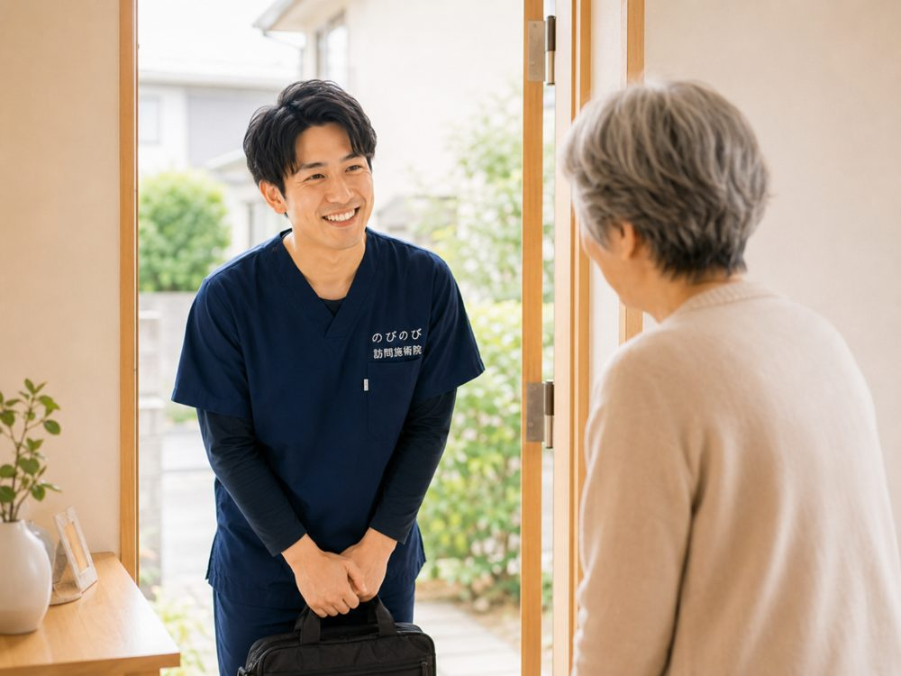

立ち上がるときにズキッとする、歩き始めの一歩がつらい、階段の下りがこわい。膝の痛みは、そのまま外出や通院の負担にもつながります。伊丹市にお住まいで、加齢による変形性膝関節症などの膝の不調をかかえるご本人やご家族に向けて、訪問鍼灸マッサージに何ができて、何ができないのかを整理しました。原因の見きわめは整形外科の役割ですが、そこを土台にできる補助もあります。
この記事のポイント
膝の痛みの診断と治療は、まず整形外科などの医師が中心です。すり減った軟骨や進んだ変形は元には戻せず、効果には個人差もあります。そのうえで私たちができるのは、かばい続けて固まった膝まわりと脚の付け根をゆるめ、めぐりを整える補助になります。医師が必要と判断し通院がむずかしい状態なら対象になります。費用は総額3,950円、1割負担ならおよそ395円が目安です。
伊丹の暮らしと、膝の痛みという足かせ
JR伊丹駅や阪急伊丹駅の周辺から、昆陽や荒牧、鴻池のあたりまで、市内各地へうかがっています。膝に痛みを抱えると、こうした何気ない道のりが急に重くのしかかります。バス停まで歩けない、玄関の上がり框がつらい、そうして少しずつ外出が減っていく方を、私たちは伊丹の各地でお見かけしてきました。北伊丹や新伊丹、稲野の住宅街でも、買い物や通院の足が遠のくご相談は年々増えています。
膝の痛みは我慢すればやり過ごせると思われがちですが、動かさない期間が続くと太ももの筋力が落ち、その筋力低下がさらに膝への負担を増やすという悪循環に入りやすいものです。まずは今つらいところを見つめ直すところから始めたい方は、「膝の痛みで立ち座りがつらい方へ」もあわせてご覧ください。
立ち座り・階段・正座、その一つひとつがつらい
変形性膝関節症などによる膝の痛みは、朝のこわばりや腫れ、曲げ伸ばしのしにくさ（可動域制限）として現れます。椅子から立ち上がる瞬間、階段の下り、床への正座、いずれも膝に大きな負担がかかる動作で、痛みをかばううちに動き方そのものが縮こまっていきます。こたつや床の生活で正座がつらく、来客をためらうようになった、という声も伺います。
訪問での施術は、こわばった膝まわりの筋肉をやわらげ、動かせる範囲を保つことを目的とした関わりです。膝の痛みは、はり・きゅうの医療保険で対象となる6つの疾病（神経痛・リウマチ・頸肩腕症候群・五十肩・腰痛症・頸椎捻挫後遺症）には含まれませんが、膝をかばって出る腰や脚の痛みや、関節の拘縮にともなう痛みについて医師が施術を必要と認めた場合に、はり・きゅうで組み立てていきます。これは病気そのものを治すものではなく、あくまで日々の動きを支えるための取り組みです。
機能訓練で「動ける膝」を保つという考え方
痛みが強いと動くのが怖くなりますが、まったく動かさないでいると筋肉はやせ、関節はさらに固くなります。この廃用を防ぐために、私たちはマッサージと合わせて、負担にならない程度に膝の曲げ伸ばしや太ももの筋力を保つ機能訓練を行います。ご自宅の椅子やベッドを使い、その方の生活動作に沿った内容にするのが訪問ならではの利点です。庭に出る一歩、買い物袋を提げて歩く動作といった具合に、その方の暮らしに沿って目標を具体化していきます。
機能訓練は鍼灸に加えて行います。これらに追加の料金はかかりません。効き方や変化のあらわれ方には個人差がありますので、焦らず、その日の膝の状態に合わせて少しずつ積み重ねていくことを大切にしています。
費用のこと、保険のしくみ
ご利用には医療保険（療養費）と医師の同意書が必要で、要介護認定は不要です。介護保険の限度額とは別枠のため、デイサービスなどと併用しても限度額を圧迫しません。1回の施術の総額は3,950円で、自己負担は1割の方で約395円が目安です。週2回のご利用なら、1割の方で月約3,160円ほどとなります。エリア内は出張費がかからず料金は一律です。
なお、同じ部位について医療保険のリハビリと鍼灸を同じ月に同時に算定することはできません。保険の考え方や自己負担額のより詳しい内容は、「料金はいくら？医療保険の自己負担額と仕組み」をご覧いただくと分かりやすいかと思います。
伊丹市内、どこまで伺えるか
のびのび訪問施術院は、JR北伊丹・阪急稲野の界隈から昆陽・荒牧・鴻池・南野・瑞ケ丘まで、伊丹市内の広い範囲へお伺いしています。通院の付き添いを頼める人がいない、雨の日は膝が痛んで外に出られない、そうした事情を抱えたご家庭にこそ、来てもらえる施術は力になります。ご自宅で膝をみさせていただくからこそ、玄関や廊下、トイレまでの動線に合わせた助言もできます。
対応できる範囲の目安は「対応エリアはどこまで来てもらえる？」で、伊丹市での取り組み全般は伊丹市の訪問鍼灸マッサージでご案内しています。膝の痛みで一歩を踏み出しにくいと感じておられるなら、まずはお住まいの町名を添えてお気軽にご相談ください。
よくある質問
伊丹市のどのあたりまで来てもらえますか？
JR伊丹・北伊丹・阪急伊丹・新伊丹・稲野の周辺から、昆陽、荒牧、鴻池、南野、瑞ケ丘など伊丹市内を広くうかがっています。詳しい地域は、お問い合わせの際にご確認ください。エリア内であれば別途の出張費はかからず、どこでも同額です。
変形性膝関節症でも保険は使えますか？
長く続く膝の痛みに医師の同意があり、通院がむずかしければ対象です。軟骨のすり減りや変形が元どおりになるわけではありませんが、周囲のこわばりへの補助はできます。感じ方には個人差があります。
水がたまっている膝でも施術できますか？
抜くかどうかを含め、医師の判断が先になります。まず整形外科にご相談ください。そのうえで、膝や太もものこわばりを体の様子を見ながら和らげ、支える力を落とさないよう段取りします。
転倒のあとに膝が痛みます。施術を受けられますか？
強く痛む、腫れて熱をもつ、体重をかけられないといったときは、先に整形外科を受診してください。骨や関節の中のトラブルが隠れていることがあるためです。医師の診断を受けたあとであれば、状態に合わせた補助を行えます。
1回の料金を教えてください。
ご自宅での施術1回が総額3,950円、1割負担でおよそ395円が目安になります。1割の方が週1回受ける場合、ひと月の自己負担はおよそ1,580円。公的な医療保険にもとづく正規の料金です。手技や身体を動かす運動は、鍼灸に加えるケアとして行います。これらに追加の料金はかかりません。
要介護認定を受けていなくても利用できますか？
はい。はり・きゅうの保険は介護保険とは別枠です。認定の有無にかかわらず、医師が必要と認めれば対象になります。費用は介護保険の区分支給限度額とは別枠なので、ケアプランの上限には影響しません。
寝たきりや車いすでも受けられますか？
はい。ベッドや車いすの上など、その方の楽な姿勢に合わせて施術します。体勢や刺激の強さも体調に合わせて調整します。施設へうかがうこともできますので、ご担当者からのご相談も歓迎しています。
同意書などの手続きは自分で用意するのですか？
いいえ。医師の同意書の手配は、のびのび訪問施術院がお手伝いします。かかりつけの医療機関をお聞かせいただければ、こちらで調整を進めますので、ご負担は少なく始められます。